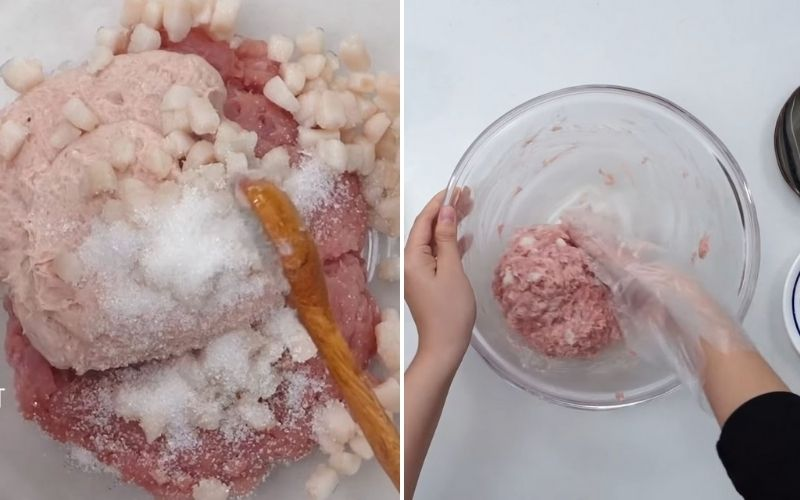
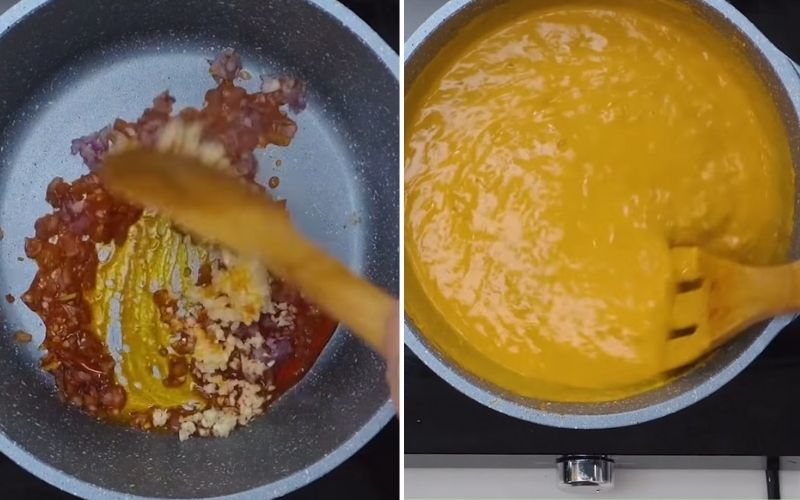
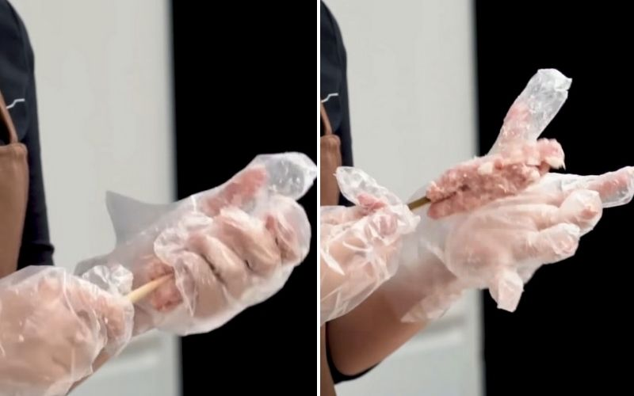

Nem nướng Nha Trang
-
Thành phần
- Giò sống 200 gram
- Mỡ heo 50 gram
- Thịt heo xay 500 gram
- Pate gan heo 100 gram
- Bánh tráng, bún 200 gram
- Hành tím, tỏi
- Gia vị quen thuộc
Hướng dẫn thực hiện
Bạn rửa sạch mỡ heo với nước muối loãng để khử mùi hôi, sau đó rửa lại với nước sạch, rồi dùng dao cắt hình quân cờ với kích thước khoảng 1cm. Tiếp đến, cho mỡ vào trụng với nước sôi khoảng 2 phút rồi vớt ra đem đi ướp với đường trong 30 phút để mỡ heo săn lại.

Bạn cho giò sống vào tô cùng thịt heo xay và phần mỡ heo đã sơ chế. Nêm vào 1/2 muỗng cà phê muối, 2 muỗng cà phê đường, 1 ít bột ngọt, 1/8 muỗng cà phê bột nở, 1 muỗng canh tỏi băm và 1 ít tiêu. Bạn trộn đều hỗn hợp các nguyên liệu trên cho thấm gia vị.
- 
Bạn dùng kéo cắt đôi miếng bánh tráng tròn ra rồi dùng cọ quết 1 lớp nước mỏng lên để bánh tráng mềm dễ cuốn hơn. Tiếp theo bạn dùng tay cuốn tròn phần bánh tráng lại theo chiều ngang. Làm lần lượt cho đến khi hết bánh tráng.Bạn dùng kéo cắt đôi miếng bánh tráng tròn ra rồi dùng cọ quết 1 lớp nước mỏng lên để bánh tráng mềm dễ cuốn hơn. Tiếp theo bạn dùng tay cuốn tròn phần bánh tráng lại theo chiều ngang. Làm lần lượt cho đến khi hết bánh tráng.

Bạn cho nồi lên bếp cùng 2 muỗng canh dầu màu điều. Khi dầu điều nóng lên thì cho
2 muỗng canh hành tím băm, 2 muỗng canh tỏi băm đảo đều cho các nguyên liệu dậy
mùi thơm.
Sau đó, cho 250g thịt heo xay vào xào cho đến khi thịt săn lại và tơi ra thì cho
100g pate gan heo, 3 muỗng canh bơ đậu phộng, 50g bột nếp pha với 100ml nước rồi
khuấy đều.
Tiếp tục nêm thêm 2 muỗng canh nước mắm, 1 ít muối, 2 muỗng canh đường, 1 ít bột
ngọt và 1 ít hạt nêm (gia giảm tùy khẩu vị). Khi gia vị hòa tan hết thì tắt bếp
là xong.
- 
Lấy phần nhân nem trong tủ lạnh ra, dùng tay có đeo bao tay ni lông thoa 1 lớp dầu ăn mỏng lên rồi lấy một phần vừa đủ nhân nem cho vào tay. Dùng 1 que tre đặt vào giữa phần nhân nem trong lòng bàn tay kia rồi dùng các ngón tay nắm chặt lại để phần nhân nem bao bọc đều bên ngoài phần que tre là được. và nướng nem.
- 